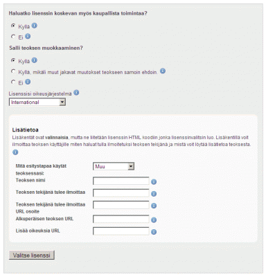
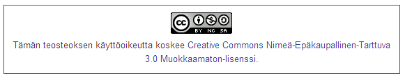

Ohjelmasi on nyt valmis ja julkaistu! Tv- ja elokuvatuotannossa puhutaan ohjelmien ja elokuvien levittämisestä ja jakelusta. Yhteisöllisen ja sosiaalisen median maisemassa keskeinen käsite on jakaminen.
Ohjelma kannattaa jakaa usealla sivustolla yhdistämällä videopalvelujen ja muiden sisältösivujen mahdollisuuksia. Palvelut tarjoavat RSS-syötteen, jonka avulla katsojat voivat tilata ohjelmasi ja jolla voit itse viestiä uusista päivityksistä toisilla sivustoilla, esimerkiksi Miro-palvelun ohjelmalistauksissa.
Ohjelmaan kannattaa julkaisun yhteydessä lisätä metadataa. Metadata on tietoa tiedosta, tapa kuvata ohjelman sisältöä: metadata vastaa kysymyksiin kuten mitä, missä, milloin? ja sen avulla voi antaa katsojalle hyödyllistä tietoa ohjelman tyypistä ja tyylistä. Palveluista löytyy tekstikentät metadatan syöttöön: esimerkiksi WordPress-sivuilla näitä ovat sivustolle luodut kategoriat ja vapaasti syötettävät tagit eli avainsanat.
Netin videopalvelut ovat suuria tietokantoja, joista halutun sisällön löytäminen voi olla vaikeaa. Hyvän metadatan avulla ohjelman löytävät verkosta katsojien lisäksi myös sen mahdolliset uudet käyttäjät.
Myös ohjelman lisenssi on tärkeää metadataa ja siksi on suositeltavaa käyttää siihen tarkoitukseen kehitettyjä ratkaisuja ja palveluja. Voit valita sopivan yhdestätoista erilaisesta Creative Commons -lisenssistä sivulta http://creativecommons.fi/lisenssit/valitse-lisenssi/

Kohdassa Haluatko lisenssisi koskevan myös kaupallista toimintaa voit sallia tai kieltää lisenssin käytön myös kaupalliseen toimintaan.
Kohdassa Salli teoksesi muokkaaminen voit sallia tai kieltää teoksen muokkaamisen. Voit sallia teoksen muokattujen versioiden julkaisemisen myös ainoastaan siinä tapauksessa, että muokkaaja jakaa teoksen samoilla ehdoilla.
Kohdassa Lisenssisi oikeusjärjestelmä voit valita lisenssin oikeusjärjestelmäksi kansainvälisen, suomalaisen tai jonkin muun maan oikeusjärjestelmän.
Lopuksi voit täyttää kohtaan Lisätietoa teoksesi tiedot ja napsauttaa Valitse lisenssi -nappia.
Näkyviin tulee lisenssi, jonka voit liittää teokseesi.

There has been error in communication with Booktype server. Not sure right now where is the problem.
You should refresh this page.